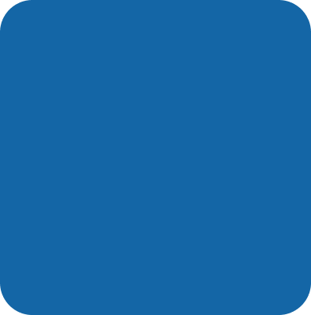
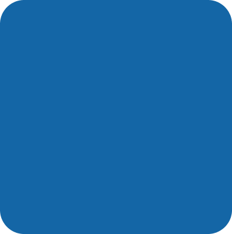

Le Fonds de Dotation « La Courstache » a pour objet le financement, l’organisation et la réalisation d’actions d’intérêt général en lien avec la lutte contre les cancers masculins (prostate et testicules) et l’amélioration des conditions de vie des patients atteints de ces pathologies et/ou en voie de guérison, selon 3 domaines d’intervention:
Sensibilisation
Fringilla dapibus platean interdum justout elentum lectus tellus midign issimer mota egestas imperdiet.
Recherche
Fringilla dapibus platean interdum justout elentum lectus tellus midign issimer mota egestas imperdiet.
Prise en Charge Globale
Fringilla dapibus platean interdum justout elentum lectus tellus midign issimer mota egestas imperdiet.
 

Sensibiliser pour prévenir
L'axe de l'information et de la sensibilisation est essentiel dans la lutte contre les cancers masculins. Le Fonds de Dotation "La Courstache" s'engage à sensibiliser la population sur les risques et les symptômes de ces cancers, ainsi qu'à promouvoir les mesures de prévention. À travers des campagnes de sensibilisation, des événements éducatifs et des initiatives de communication, le Fonds de Dotation vise à informer le public sur l'importance du dépistage précoce, des modes de vie sains et des comportements à adopter pour réduire les risques de cancer chez les hommes. En mettant l'accent sur la sensibilisation, "La Courstache" souhaite encourager une prise de conscience collective et favoriser une meilleure prévention de ces maladies.
Investir dans la recherche pour l'avenir
La recherche constitue un pilier fondamental dans la lutte contre les cancers masculins. "La Courstache" s'engage à soutenir et financer des projets de recherche innovants visant à mieux comprendre les mécanismes des cancers masculins, à développer de nouvelles méthodes de diagnostic et de traitement, ainsi qu'à améliorer la prise en charge globale des patients.
Améliorer la qualité de vie
"La Courstache" reconnaît l'importance d'une prise en charge globale des patients atteints de cancers masculins. Au-delà des traitements médicaux, il est essentiel d'apporter un soutien psychologique, social et émotionnel aux patients et à leurs proches. Le Fonds de Dotation met en place des programmes d'accompagnement personnalisés, des groupes de soutien, des activités de bien-être et des initiatives visant à améliorer la qualité de vie des patients.